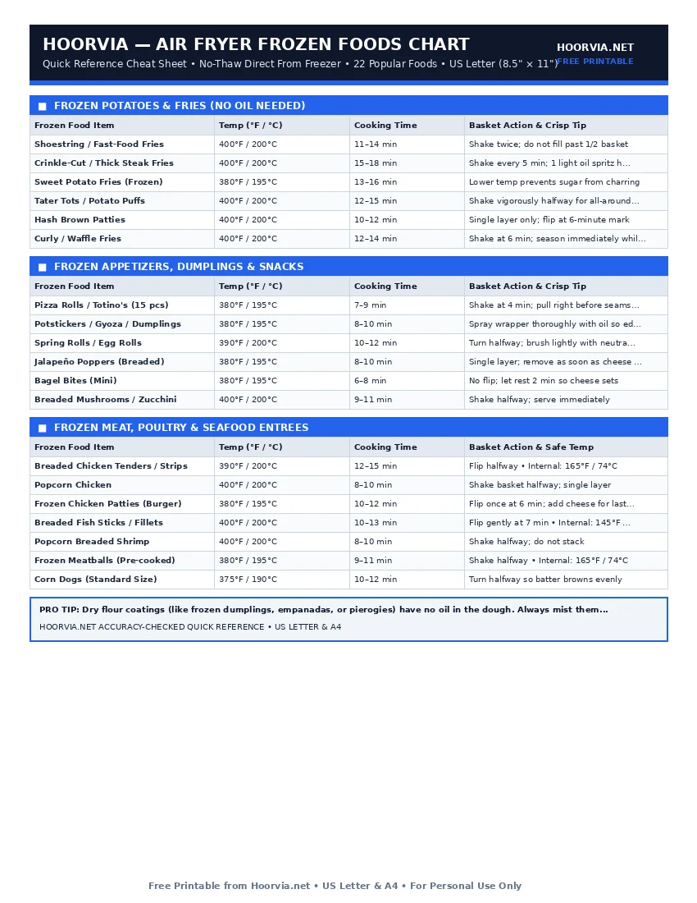

Air Fryer Frozen Food Cooking Times Cheat Sheet
Frozen convenience foods are par-cooked and flash-frozen with a thin layer of vegetable oil already locked into the coating. Never thaw frozen snacks before air frying—thawing turns the ice crystals into soggy batter. Cook straight from the freezer at high heat (380°F–400°F) using the exact timing table below.
| Frozen Food Item | Temp (°F / °C) | Cooking Time | Basket Action & Crisp Tip |
|---|---|---|---|
| Shoestring / Fast-Food Fries | 400°F / 200°C | 11–14 min | Shake twice; do not fill past 1/2 basket |
| Crinkle-Cut / Thick Steak Fries | 400°F / 200°C | 15–18 min | Shake every 5 min; 1 light oil spritz helps |
| Sweet Potato Fries (Frozen) | 380°F / 195°C | 13–16 min | Lower temp prevents sugar from charring |
| Tater Tots / Potato Puffs | 400°F / 200°C | 12–15 min | Shake vigorously halfway for all-around crunch |
| Hash Brown Patties | 400°F / 200°C | 10–12 min | Single layer only; flip at 6-minute mark |
| Curly / Waffle Fries | 400°F / 200°C | 12–14 min | Shake at 6 min; season immediately while hot |
| Frozen Food Item | Temp (°F / °C) | Cooking Time | Basket Action & Crisp Tip |
|---|---|---|---|
| Pizza Rolls / Totino's (15 pcs) | 380°F / 195°C | 7–9 min | Shake at 4 min; pull right before seams burst |
| Potstickers / Gyoza / Dumplings | 380°F / 195°C | 8–10 min | Spray wrapper thoroughly with oil so edges don't dry |
| Spring Rolls / Egg Rolls | 390°F / 200°C | 10–12 min | Turn halfway; brush lightly with neutral oil |
| Jalapeño Poppers (Breaded) | 380°F / 195°C | 8–10 min | Single layer; remove as soon as cheese bubbles |
| Bagel Bites (Mini) | 380°F / 195°C | 6–8 min | No flip; let rest 2 min so cheese sets |
| Breaded Mushrooms / Zucchini | 400°F / 200°C | 9–11 min | Shake halfway; serve immediately |
| Frozen Food Item | Temp (°F / °C) | Cooking Time | Basket Action & Safe Temp |
|---|---|---|---|
| Breaded Chicken Tenders / Strips | 390°F / 200°C | 12–15 min | Flip halfway • Internal: 165°F / 74°C |
| Popcorn Chicken | 400°F / 200°C | 8–10 min | Shake basket halfway; single layer |
| Frozen Chicken Patties (Burger) | 380°F / 195°C | 10–12 min | Flip once at 6 min; add cheese for last 1 min |
| Breaded Fish Sticks / Fillets | 400°F / 200°C | 10–13 min | Flip gently at 7 min • Internal: 145°F / 63°C |
| Popcorn Breaded Shrimp | 400°F / 200°C | 8–10 min | Shake halfway; do not stack |
| Frozen Meatballs (Pre-cooked) | 380°F / 195°C | 9–11 min | Shake halfway • Internal: 165°F / 74°C |
| Corn Dogs (Standard Size) | 375°F / 190°C | 10–12 min | Turn halfway so batter browns evenly |
Printable Cheat Sheet Preview (US Letter & A4)
High-contrast, ink-saving layout designed for kitchen binders and refrigerator magnets. No sign-up required.

How to Get Deep-Fryer Crunch From Frozen Foods
The biggest mistake with frozen foods is filling the air fryer basket to the top. When frozen items are stacked 3 layers deep, the ice crystals evaporate into trapped steam instead of escaping through the top exhaust vent.
- Zero Oil Needed: Pre-fried items like French fries, tater tots, chicken nuggets, mozzarella sticks, and hash browns already release oil as they heat.
- Light Oil Spritz Required: Raw pastry or flour dough exteriors—such as frozen potstickers, pierogies, samosas, and un-fried breaded fish—need a light mist of oil to trigger browning.
Frequently Asked Questions
Should I preheat the air fryer for frozen foods?
Yes! Preheating for 3 minutes ensures the basket grate is piping hot. Putting frozen food into a cold basket lets the bottom coating thaw slowly and stick to the grates.
How do I stop cheese-stuffed frozen snacks from exploding?
Cook mozzarella sticks or pizza rolls at 380°F–390°F and check 1 minute early. The moment you see the first tiny pinhole of melted cheese, pull the basket immediately.
Complete Air Fryer Reference Cluster (10 Free Sheets)
- 📄 Air Fryer Cooking Times Chart (#001)
- 📄 Air Fryer Temperature Chart & Oven Conversion (#002)
- 📄 Air Fryer Chicken Cooking Times (#004)
- 📄 Air Fryer Beef & Steak Doneness Chart (#005)
- 📄 Air Fryer Pork Chops, Belly & Ribs Chart (#006)
- 📄 Air Fryer Fish, Salmon & Shrimp Chart (#007)
- 📄 Air Fryer Fresh Vegetable Roasting Chart (#008)
- 📄 Air Fryer Leftover Reheating Guide (#009)
- 📄 Air Fryer Food Doneness & Pull Temp Guide (#010)